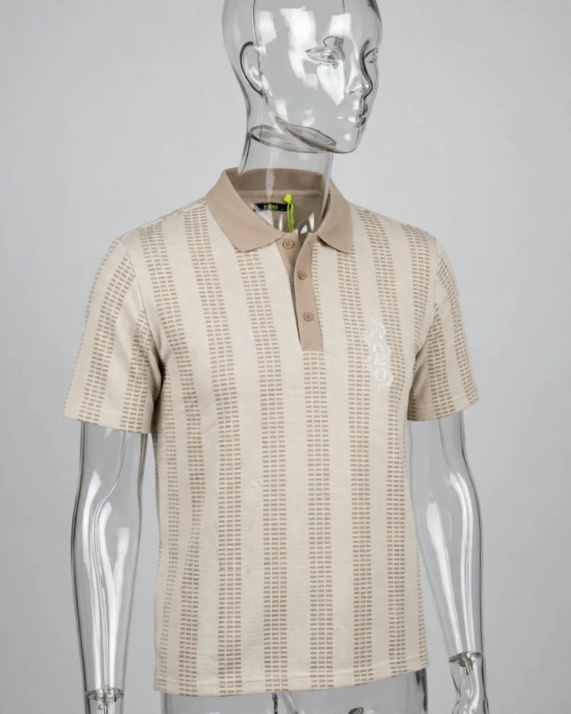

Jacquard a righe verticali, collo e bottoni tortora. La firma MARO è ricamata tono su tono: la vede solo chi si avvicina.
Dettagli e materiali
- Maglia jacquard a righe
- Collo e abbottonatura tortora
- Firma MARO ricamata tono su tono
- Vestibilità regolare
Guida alle taglie
| Taglia | Torace (cm) | Lunghezza (cm) |
|---|---|---|
| S | 55 | 70 |
| M | 58 | 72 |
| L | 61 | 74 |
| XL | 64 | 76 |
| XXL | 67 | 78 |
Misure del capo steso, di esempio.
Spedizione e resi
Spedizione in Italia in 2–4 giorni lavorativi. Reso entro 14 giorni dalla consegna. Tutti i dettagli